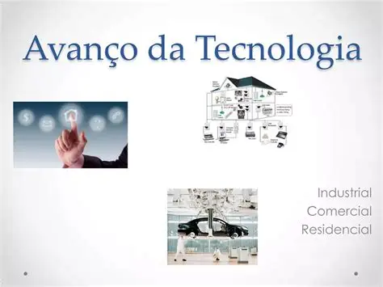

Jogo acirrado entre França e Uzbequistão termina, surpreendentemente, com a vitória do país ásiatico. Durante as quartas de finais, a nação
Uzbeque se revolta diante do desrespeito que os Estados Unidos se portou em relação a eles; Após o zagueiro Abdukodir Khusanov ser retirado do
jogo injustamente, o povo brasileiro se une ao Uzbequistão e Neymar surge da plateia liderando a seleção brasileira, que então, se fundiram e
jogaram contra a França. Com a união desses dois países, a seleção francesa perde de 7x1. .
Lenin volta a vida?
Por: Analice Paulista
Ano de eleição, o Brasil se divide em dois partidos, o caos se instala. Após o resultado das eleições, onde o presidente Polvo da Silvesca, representante de um partido da centro-esquerda liberal, ganha com 62,6% dos votos brasileiros, o outro lado se revolta. Assim como nos anos anteriores,
ruas são fechadas, o Congresso é destruído, pessoas são agredidas na rua como forma de protesto contra os resultados da eleição. Como tal caos já não era suficiente, os políticos do partido oposto também se juntam aos protestos, sabotando o governo brasileiro por meio da divulgação de documentos
confidenciais, vida pessoal dos outros políticos e espalhando mentiras para fortalecer seu argumento.
Em meio toda essa desordem, o Brasil recebe uma figura inesperada, certamente inedita que causou choque mutualmente em toda a população, de forma positiva e negativa. Alguns se revoltaram ainda mais, outros, viram como uma luz no fim do tunel. Durante um dos maiores protesto que estava acontecendo
na cidade de São Paulo, todos avistam uma pessoa absurdamente simbólica para a história do mundo: Vladimir Ilyich Ulianov, melhor conhecido como Vladimir Lenin. Quem todos achavam que estava a sete palmos no chão, estava agora, logo a sua frente, organizando e liderando uma revolução do proletariado.
Os que uma vez se sentiram ofendidos com um governo progressista, agora iriam lidar com um de extrema esquerda.

Como a velocidade da evolução das tecnologias nos afeta?
Por: Analice Paulista
Nas últimas decadas, as tecnologias avançaram em uma velocidade fascinante, e de certa forma, até assustadora. É incomum a reflexão de como isso afetou, afeta e irá afetar as nossas vidas - Como e em que momento a tecnologia passou a ser rotina? Aqui, veremos 6 vantages e desvantagens dessa inovação:
VANTAGENS
Pode imaginar como era a vida sem cartões e contas bancárias online? Receber seu salário em cheques, passar horas em filas para pagar as contas... A tecnologia nos trouxe conforto; Seu salário? Direto na conta. Dívidas? Paga direto na conta. A tecnologia nos permite poupar tempo.
Sem a tecnologia, não existia comprar coisas pela internet. Tudo o que você precisava, te forçava a sair de casa. Agora? Basta pesquisar no Google e em algumas horas seu produto estará na sua porta.
Agendamentos, todos os agendamentos podem ser feitos em um clique, sem sequer necessidade de ligar para o lugar. Antigamente, era necessário ir a um orelhão para agendar consultas, hoje em dia, todos temos celulares.
.png)
.png)
.png)
.png)